The whole point of this project lives in one decision: given a query timestamp, which of a user’s multiple recorded feature snapshots is the CORRECT one to return? The diagram traces that join, plus the contrasting always-latest online path.

| Node | Location | What it does |
|---|---|---|
| TIMECHECK | Feast's internal point-in-time join logic | For each user, only snapshots with event_timestamp <= query.event_timestamp qualify — among those, the LATEST qualifying one is chosen. A snapshot recorded AFTER the query time is correctly invisible to that query. |
| DROPROW | Feast's local file offline store (real finding) | When ZERO snapshots qualify (the query timestamp predates the user's earliest recorded snapshot), Feast doesn't return a null-filled row — it DROPS the row from the result entirely. Verified directly: len(result) == 0, not a row of NaNs. |
| ONLINELOOKUP | store.py:get_online_features() | A completely different code path with no timestamp parameter at all — always returns whatever was most recently loaded into the SQLite online store via feast materialize. |
User 1 has snapshots at day 0 (rating=3.0), day 30 (rating=3.5), and day 60 (rating=4.2). Querying "as of day 15" correctly returns the day-0 value, NOT the latest 4.2 — proving no future information leaked backward.
TIMECHECK(day-15 query, day-0 and day-30 both <= query) → PICKLATEST(day-30 is too late, use day-0) → 3.0The online path ignores timestamps entirely and returns whatever's freshest — correctly and provably DIFFERENT from the historical query above, even for the identical user.
ONLINESTART → ONLINELOOKUP → LATESTONLY → 4.2 (contrasts directly with the 3.0 above)A query timestamp before the user's earliest recorded feature value — the row gets dropped entirely from the result, a real, tested, non-obvious behavior worth knowing before it surprises someone in production.
TIMECHECK(zero snapshots qualify) → DROPROW → row absent from result DataFrame